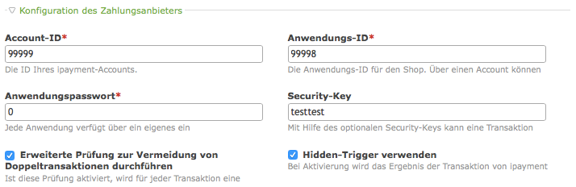

Isotope ipayment
Diese Contao-Erweiterung ergänzt den Webshop Isotope um die Zahlungsart ipayment von 1&1.
Die folgenden Features der ipayment Spezifikation Version 1.2 sind implementiert:
- Unterstützt den normalen CGI-Modus.
- Unterstützt den Transaktionstyp: Sofortige Buchung einer Zahlung: Autorisieren und abbuchen (auth).
- Unterstützt die Zahlungsart per Kreditkarte.
- Erlaubt die Verwendung eines Hidden-Triggers zur Zahlungsbestätigung, auch wenn der Kunde nach dem Bezahlen nicht zurück zum Shop geht.
- Erlaubt die Verwendung des Security-Keys zur Absicherung des Zahlungsvorgangs gegen Betrugsversuch.
- Erlaubt die Durchführung der erweiterte Prüfung zur Vermeidung von Doppeltransaktionen.
Weiterführende Dokumentation:
Verwendung
Im Backend unter Shop-Konfiguration und Zahlungsarten eine neue Zahlungsart hinzufügen. Die Account-ID, Anwendungs-ID und das Anwendungspasswort müssen angegeben werden, damit ipayment die Zahlungen dem richtigen Konto zuordnen kann. Die anderen Angaben sind optional und können deaktiviert oder leer gelassen werden.

Die Angabe des Security-Keys ist empfehlenswert, um die Zahlungen gegen Betrug besser zu schützen. Mit Hilfe des Security-Keys wird für die übertragenen Zahlungsinformationen ein Hashcode gebildet, den ipayment beim Empfang verifiziert. Stimmt der Hashcode der empfangenen Zahlungsinformationen nicht, lehnt ipayment die Zahlung ab.
Um doppelte Transaktionen zu vermeiden sollte die erweitere Prüfung dazu aktiviert werden. Eine doppelte Transaktion kann zum Beispiel entstehen, wenn der Käufer mehrfach den Link zum Bezahlen anklickt.
Der Hidden-Trigger stellt sicher, dass die Zahlung vom Shop auch dann registriert wird, wenn der Käufer nicht von ipayment zurück zum Shop gelangt. Dies kann zum Beispiel geschehen, wenn der Käufer nach dem Bezahlen nicht den Zurück-zum-Shop-Link anklickt. Diese Option sollte auch aktiviert sein.
Wenn Sie die Weiterleitungsseite zu ipayment anpassen wollen, können sie dafür
das Template iso_payment_ipayment ändern. Der Hinweistext kann durch
überschreiben der Übersetzung
$GLOBALS['TL_LANG']['MSC']['ipayment_redirect_description'] geändert werden.
Der Buttontext durch überschreiben von
$GLOBALS['TL_LANG']['MSC']['ipayment_submit_label'].